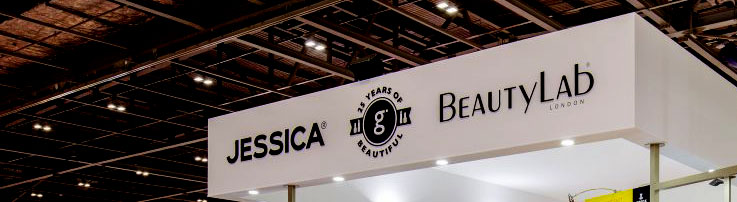

{% extends "template.html" %}	
{% import "macros.html" as myMacros %}

{% block breadcrumb %}
	<ul class="breadcrumb-list">
		<li><a href="index.html"><i class="fa fa-home" aria-hidden="true"></i> Главная</a></li>
		<li><a href="">Выставки</a></li>
	</ul>
{% endblock %}			

{% block content %}	
	<main class="main employers-page">
		<div class="layot-section">
			<div class="container flex">
				<div class="layot-content-block">	
					<div class="sadow-section top">
						<div class="all-shadow"></div>
							<div class="layot-content-block__header min flex">
							
							<div class="layot-content-block__header-description-block with-btn flex">
									<h2 class="title title__white">Лучшие  работадатели бьюти-рынка</h2>
									<a href="#" class="button hvr-rectangle-out button__blue-pink">добавить вакансию</a>	
							</div>
						</div>					
							<div class="employers-page-section">								
								<div class="employers__wrap">
									{% include "employers-list.html" %}									
								</div>
						</div>	
					</div>
					{% include "paging.html" %}													
				</div>							
					{{ myMacros.sidebar(className="sidebar", sidebarMainImgBlock=false, sidebarWorkBlock=false, sidebarVacansiesBlock=true, sidebarEventBlock=false, formblock=true, sidebarColBlock=false, sidebarImgBlock=false, sidebarPopBlock=false) }}
			</div>			
		</div>
    
    {% include "others-services-section.html" %}	

		{% include "social-section.html" %}		
	
	</main>
{% endblock %} 

